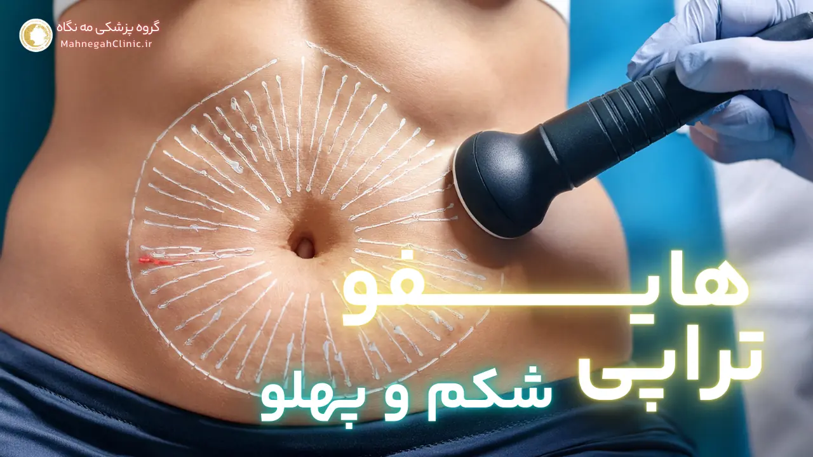
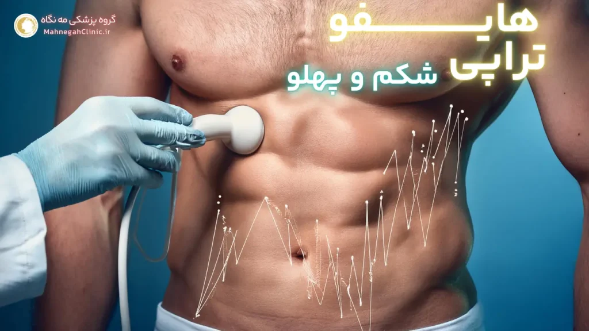
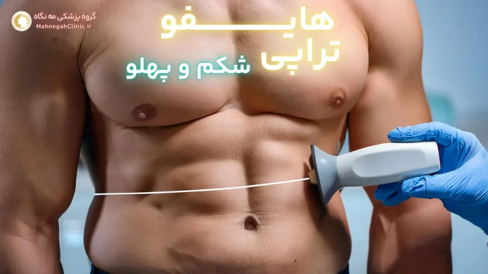
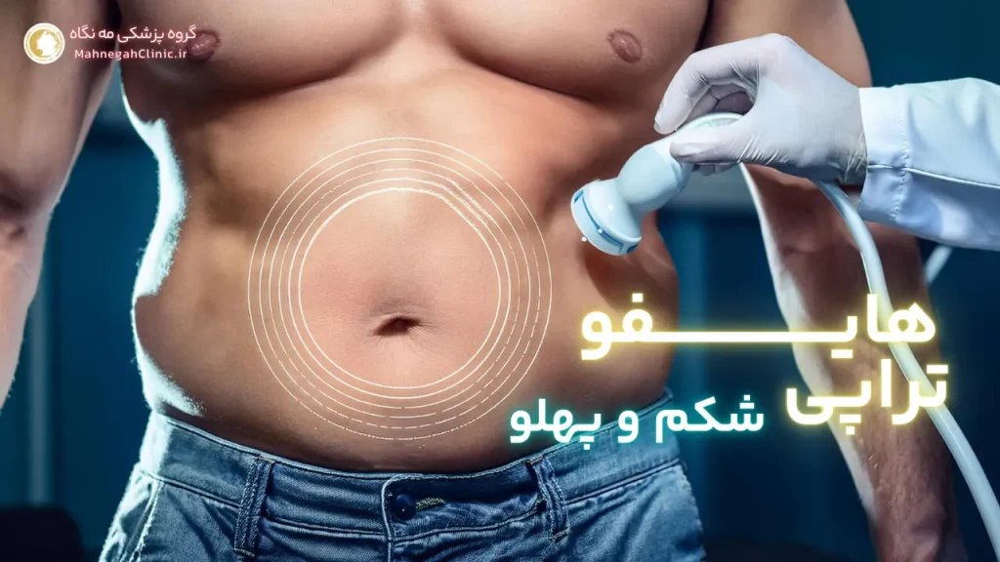
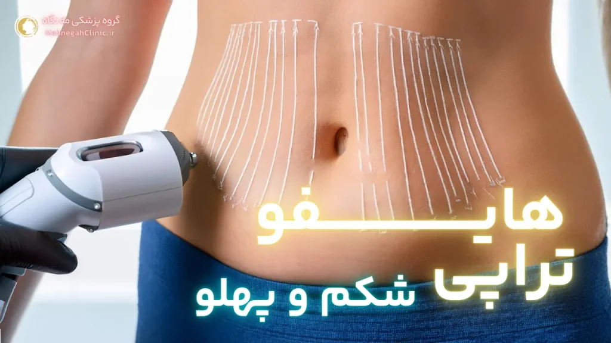
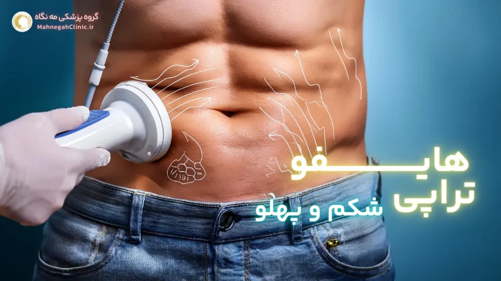

خانه / مجله / لاغری و کاهش وزن
هایفوتراپی شکم در سعادت آباد: کاهش چربی و سفت کردن پوست بدون جراحی

هایفوتراپی شکم چیست و چگونه عمل میکند؟
هایفوتراپی یک روش غیرتهاجمی و پیشرفته است که با استفاده از امواج اولتراسوند متمرکز با شدت بالا (HIFU) به لاغری و سفت کردن پوست کمک میکند. در این روش (هایفوتراپی شکم در سعادت آباد)، امواج اولتراسوند به لایههای عمیق پوست نفوذ کرده و با ایجاد گرما در بافت چربی، باعث تخریب سلولهای چربی میشوند.
همچنین، این گرما باعث تحریک تولید کلاژن و الاستین در پوست میشود که به سفت شدن و جوانسازی پوست کمک میکند.
مکانیسم عملکرد هایفوتراپی
در هایفوتراپی شکم، دستگاه هایفو امواج اولتراسوند را به طور دقیق به لایههای چربی زیر پوست شکم میفرستد. این امواج با انرژی بالا باعث ایجاد نقاط کوچک حرارتی در بافت چربی میشوند. این نقاط حرارتی باعث تخریب سلولهای چربی و در نتیجه کاهش حجم چربی در ناحیه مورد نظر میشوند. همچنین، گرمای ایجاد شده باعث انقباض و سفت شدن فیبرهای کلاژن و الاستین در پوست میشود که به بهبود ظاهر پوست و کاهش شلی و افتادگی آن کمک میکند.
مزایای هایفوتراپی برای لاغری شکم
- غیرتهاجمی و بدون نیاز به جراحی: هایفوتراپی یک روش غیرتهاجمی است و نیازی به برش، بخیه و بیهوشی ندارد. این موضوع باعث میشود که دوران نقاهت بسیار کوتاه باشد و فرد بتواند به سرعت به فعالیتهای روزمره خود بازگردد.
- درد و عوارض جانبی کم: در طول هایفوتراپی، ممکن است احساس گرما یا سوزش خفیفی در ناحیه تحت درمان داشته باشید، اما این احساس معمولاً قابل تحمل است و نیازی به استفاده از داروهای مسکن ندارد. همچنین، عوارض جانبی هایفوتراپی معمولاً خفیف و موقتی هستند و شامل قرمزی، تورم و کبودی میشوند.
- نتایج قابل مشاهده و ماندگار: نتایج هایفوتراپی معمولاً پس از چند هفته قابل مشاهده هستند و با گذشت زمان بهبود مییابند. با توجه به اینکه هایفوتراپی باعث تخریب سلولهای چربی میشود، نتایج آن میتوانند ماندگار باشند، البته به شرط حفظ وزن و سبک زندگی سالم.
- قابل انجام برای اکثر افراد: هایفوتراپی برای اکثر افرادی که دارای چربی موضعی در ناحیه شکم هستند و به دنبال یک روش غیرتهاجمی برای لاغری و سفت کردن پوست خود هستند، مناسب است. با این حال، بهتر است قبل از انجام هایفوتراپی با پزشک خود مشورت کنید تا از مناسب بودن این روش برای شما اطمینان حاصل کنید.
هایفوتراپی شکم یک روش ایمن، موثر و غیرتهاجمی برای لاغری و سفت کردن پوست شکم است. با انتخاب یک پزشک متخصص و مجرب، میتوانید از نتایج مطلوب و ماندگار این روش بهرهمند شوید و به اندامی متناسب و زیبا دست یابید.

هایفوتراپی شکم در سعادت آباد: بهترین انتخاب برای تناسب اندام
سعادت آباد، به عنوان یکی از مناطق پیشرفته و مدرن تهران، میزبان کلینیکها و مراکز زیبایی متعددی است که خدمات هایفوتراپی شکم را با بالاترین کیفیت ارائه میدهند. این منطقه با دسترسی آسان، امکانات رفاهی و تمرکز بر ارائه خدمات زیبایی و سلامتی، به یکی از مقاصد محبوب برای افرادی تبدیل شده است که به دنبال بهبود ظاهر و تناسب اندام خود هستند.
چرا سعادت آباد را برای هایفوتراپی انتخاب کنیم؟
- دسترسی آسان: سعادت آباد با قرار گرفتن در شمال غرب تهران و دسترسی به بزرگراههای اصلی، امکان دسترسی آسان از نقاط مختلف شهر را فراهم میکند. این موضوع به ویژه برای افرادی که از مناطق دورتر به دنبال خدمات هایفوتراپی هستند، اهمیت دارد.
- کلینیکها و پزشکان متخصص: در سعادت آباد، میتوانید از بین کلینیکها و پزشکان متخصص و مجرب در زمینه هایفوتراپی، بهترین گزینه را برای خود انتخاب کنید. این موضوع به شما اطمینان میدهد که درمان شما با بالاترین کیفیت و ایمنی انجام خواهد شد.
- تجهیزات پیشرفته: کلینیکهای هایفوتراپی در سعادت آباد از تجهیزات پیشرفته و بهروز دنیا استفاده میکنند. این موضوع باعث میشود که درمان شما با دقت و اثربخشی بیشتری انجام شود و نتایج بهتری حاصل شود.
- محیط آرام و دلپذیر: کلینیکهای زیبایی در سعادت آباد معمولاً دارای محیطی آرام و دلپذیر هستند که به شما کمک میکند در طول درمان احساس راحتی و آرامش داشته باشید.
- خدمات پس از درمان: بسیاری از کلینیکها در سعادت آباد خدمات پس از درمان را نیز ارائه میدهند. این خدمات شامل مشاوره، پیگیری نتایج و پاسخ به سوالات شما میشود.
کلینیکها و مراکز تخصصی هایفوتراپی شکم در سعادت آباد
در سعادت آباد، میتوانید از بین کلینیکها و مراکز تخصصی متعددی که خدمات هایفوتراپی شکم را ارائه میدهند، انتخاب کنید. برخی از این مراکز عبارتند از:
- کلینیک زیبایی مه نگاه: این کلینیک با بهرهگیری از پزشکان متخصص و تجهیزات پیشرفته، خدمات هایفوتراپی را با بالاترین کیفیت و ایمنی ارائه میدهد.
- مرکز تخصصی هایفوتراپی الک: این مرکز با تمرکز بر ارائه خدمات هایفوتراپی، از جدیدترین تکنولوژیها و روشها برای دستیابی به نتایج مطلوب استفاده میکند.
- کلینیک پوست و مو سوشیانت: این کلینیک با ارائه طیف گستردهای از خدمات زیبایی، از جمله هایفوتراپی، به شما کمک میکند به ظاهری جوان و زیبا دست یابید.
- بهترین مرکز هایفوتراپی شکم و پهلو در سعادت آباد
با انتخاب سعادت آباد برای انجام هایفوتراپی شکم، میتوانید از مزایای متعددی مانند دسترسی آسان، پزشکان متخصص، تجهیزات پیشرفته و محیط آرام بهرهمند شوید و به اندامی متناسب و زیبا دست یابید.

عکس قبل و بعد هایفوتراپی شکم: گواه اثربخشی
یکی از بهترین راهها برای ارزیابی اثربخشی هایفوتراپی شکم، مشاهده عکس قبل و بعد هایفوتراپی شکم افرادی است که این روش را انجام دادهاند. این تصاویر به شما امکان میدهند تا تغییرات چشمگیر در شکل و ظاهر شکم را پس از هایفوتراپی مشاهده کنید و از نزدیک با نتایج واقعی این روش آشنا شوید.
بررسی تغییرات چشمگیر با هایفوتراپی
- کاهش چربیهای موضعی: عکسهای قبل و بعد هایفوتراپی شکم نشان میدهند که این روش میتواند به طور موثری چربیهای موضعی در ناحیه شکم را کاهش دهد و به شکمی صافتر و تختتر منجر شود.
- سفت شدن و لیفت پوست: هایفوتراپی علاوه بر کاهش چربی، باعث سفت شدن و لیفت پوست شکم نیز میشود. این موضوع به ویژه برای افرادی که پس از کاهش وزن یا بارداری دچار شلی و افتادگی پوست شدهاند، بسیار مفید است.
- بهبود ظاهر کلی شکم: با کاهش چربی و سفت شدن پوست، هایفوتراپی میتواند به بهبود ظاهر کلی شکم و افزایش اعتماد به نفس افراد کمک کند.
دیدن نتایج واقعی برای تصمیمگیری بهتر
مشاهده عکس قبل و بعد هایفوتراپی شکم به شما کمک میکند تا انتظارات واقعبینانهای از نتایج این روش داشته باشید و تصمیم بهتری برای انجام آن بگیرید. همچنین، این تصاویر میتوانند به شما در انتخاب پزشک و کلینیک مناسب برای هایفوتراپی کمک کنند، زیرا میتوانید نمونه کارهای پزشکان مختلف را مشاهده و مقایسه کنید.
با دیدن تصاویر قبل و بعد، میتوانید از اثربخشی هایفوتراپی شکم اطمینان حاصل کنید و با انگیزه بیشتری برای رسیدن به اندامی ایدهآل، این روش را انتخاب کنید.

فیلم هایفوتراپی شکم در سعادت آباد: مشاهده روند درمان
فیلم هایفوتراپی شکم یکی دیگر از ابزارهای مفید برای آشنایی با این روش درمانی و کاهش نگرانیهای احتمالی است. با مشاهده این فیلمها، میتوانید روند درمان را از نزدیک مشاهده کنید و با مراحل مختلف آن آشنا شوید. همچنین، میتوانید نحوه عملکرد دستگاه هایفو و اثرات آن بر روی بافت چربی را ببینید.
آشنایی با مراحل هایفوتراپی
- مشاوره اولیه: در این مرحله، پزشک متخصص با شما درباره اهداف درمانی، سابقه پزشکی و شرایط فعلی شما صحبت میکند و مناسب بودن هایفوتراپی برای شما را ارزیابی میکند.
- آمادهسازی: قبل از شروع درمان، ناحیه مورد نظر تمیز و ضدعفونی میشود و در صورت نیاز، از بیحسی موضعی استفاده میشود.
- انجام هایفوتراپی: پزشک دستگاه هایفو را بر روی پوست شما قرار میدهد و امواج اولتراسوند را به لایههای عمیق پوست میفرستد. در طول درمان، ممکن است احساس گرما یا سوزش خفیفی داشته باشید.
- پایان درمان و مراقبتهای پس از آن: پس از اتمام هایفوتراپی، میتوانید به فعالیتهای روزمره خود بازگردید. پزشک ممکن است توصیههایی درباره مراقبتهای پس از درمان، مانند استفاده از کرمهای مرطوبکننده و ضد آفتاب، به شما ارائه دهد.
رفع نگرانیها با دیدن فیلمهای واقعی
مشاهده فیلم هایفوتراپی شکم میتواند به رفع نگرانیهای شما درباره این روش کمک کند. با دیدن این فیلمها، میتوانید ببینید که هایفوتراپی یک روش غیرتهاجمی و بدون درد است و عوارض جانبی کمی دارد. همچنین، میتوانید با دیدن نتایج واقعی هایفوتراپی در افراد دیگر، انگیزه بیشتری برای انجام این روش و رسیدن به اندامی متناسب پیدا کنید.
با مشاهده فیلمهای هایفوتراپی شکم، میتوانید با اطمینان بیشتری این روش را انتخاب کنید و از نتایج آن لذت ببرید.
هزینه هایفوتراپی شکم در سعادت آباد + تخفیف
یادتون باشه با پر کردن این فرم، 10 درصد تخفیف میگیرید!
هزینه هایفوتراپی شکم یکی از مهمترین عواملی است که افراد در تصمیمگیری برای انجام این روش در نظر میگیرند. در سعادت آباد، قیمت هایفوتراپی شکم میتواند متغیر باشد و به عوامل مختلفی بستگی دارد.
عوامل موثر بر قیمت هایفوتراپی
- وسعت ناحیه تحت درمان: هرچه ناحیه تحت درمان بزرگتر باشد، هزینه هایفوتراپی نیز بیشتر خواهد بود. به عنوان مثال، هایفوتراپی شکم و پهلو معمولاً گرانتر از هایفوتراپی فقط شکم است.
- تعداد جلسات درمانی: تعداد جلسات مورد نیاز برای دستیابی به نتایج مطلوب نیز بر هزینه هایفوتراپی تأثیر میگذارد. برخی افراد ممکن است تنها به یک جلسه نیاز داشته باشند، در حالی که برخی دیگر ممکن است به چندین جلسه نیاز داشته باشند.
- تجربه و تخصص پزشک: پزشکان با تجربه و تخصص بیشتر معمولاً هزینههای بالاتری را برای خدمات خود دریافت میکنند.
- نوع دستگاه هایفو: دستگاههای هایفو با تکنولوژیهای جدیدتر و پیشرفتهتر ممکن است هزینههای بالاتری داشته باشند.
- موقعیت کلینیک: کلینیکهای واقع در مناطق پر رفت و آمد و با امکانات بیشتر ممکن است هزینههای بالاتری را برای خدمات خود دریافت کنند.
مقایسه هزینهها با سایر روشها - هایفوتراپی شکم در سعادت آباد
در مقایسه با سایر روشهای لاغری و تناسب اندام، هایفوتراپی شکم معمولاً هزینه کمتری دارد. به عنوان مثال، جراحی لیپوساکشن یا ابدومینوپلاستی هزینه بسیار بیشتری نسبت به هایفوتراپی دارد. همچنین، هایفوتراپی نیازی به بستری شدن در بیمارستان و دوران نقاهت طولانی ندارد، که این موضوع نیز به کاهش هزینهها کمک میکند.
با این حال، مهم است که قبل از تصمیمگیری درباره هایفوتراپی، با پزشک خود مشورت کنید و درباره هزینهها و عوامل موثر بر آن صحبت کنید. همچنین، میتوانید با مقایسه قیمتها در کلینیکهای مختلف، بهترین گزینه را برای خود انتخاب کنید.

عوارض هایفوتراپی شکم: نکات مهم
هایفوتراپی شکم به عنوان یک روش غیرتهاجمی و ایمن شناخته میشود، اما مانند هر روش درمانی دیگری، ممکن است با عوارض جانبی همراه باشد. اکثر این عوارض خفیف و موقتی هستند و طی چند روز برطرف میشوند. با این حال، آگاهی از این عوارض و انتخاب پزشک متخصص میتواند به کاهش خطر بروز آنها کمک کند.
عوارض جانبی احتمالی و موقتی
- قرمزی و تورم: پس از هایفوتراپی، ممکن است قرمزی و تورم خفیفی در ناحیه تحت درمان مشاهده شود. این عارضه معمولاً طی چند ساعت یا چند روز برطرف میشود.
- درد و سوزش: برخی افراد ممکن است در طول درمان یا پس از آن، احساس درد یا سوزش خفیفی داشته باشند. این احساس معمولاً قابل تحمل است و با استفاده از کمپرس سرد یا داروهای مسکن ساده قابل کنترل است.
- کبودی: در برخی موارد، ممکن است کبودی خفیفی در ناحیه تحت درمان ایجاد شود. این عارضه نیز معمولاً طی چند روز برطرف میشود.
- بیحسی یا گزگز: در موارد نادر، ممکن است بیحسی یا گزگز موقتی در ناحیه تحت درمان ایجاد شود. این عارضه معمولاً طی چند هفته برطرف میشود.
اهمیت انتخاب پزشک متخصص
انتخاب یک پزشک متخصص و مجرب در زمینه هایفوتراپی بسیار مهم است. پزشک متخصص میتواند با ارزیابی دقیق شرایط شما و انتخاب پارامترهای مناسب دستگاه، خطر بروز عوارض جانبی را به حداقل برساند. همچنین، پزشک میتواند در صورت بروز هرگونه عارضه، به شما راهنماییهای لازم را ارائه دهد و به درمان آنها کمک کند.
با انتخاب پزشک متخصص و رعایت مراقبتهای پس از درمان، میتوانید از مزایای هایفوتراپی شکم بهرهمند شوید و به اندامی متناسب و زیبا دست یابید، بدون اینکه نگران عوارض جانبی باشید.

هایفوتراپی برای شکم و پهلو: تناسب اندام کامل
هایفوتراپی نه تنها برای لاغری شکم، بلکه برای رفع چربیهای موضعی در ناحیه پهلو نیز بسیار موثر است. با انجام هایفوتراپی برای شکم و پهلو، میتوانید به طور همزمان به تناسب اندام در هر دو ناحیه دست یابید و از ظاهری متناسب و زیبا لذت ببرید.
رفع چربیهای موضعی در نواحی شکم و پهلو (هایفوتراپی شکم در سعادت آباد)
بسیاری از افراد با مشکل تجمع چربی در نواحی شکم و پهلو مواجه هستند. این چربیها ممکن است به دلیل عوامل مختلفی مانند ژنتیک، رژیم غذایی نامناسب، عدم تحرک و تغییرات هورمونی ایجاد شوند. هایفوتراپی با هدف قرار دادن مستقیم سلولهای چربی در این نواحی، میتواند به طور موثری آنها را تخریب کرده و به کاهش سایز و بهبود ظاهر شکم و پهلو کمک کند.
دستیابی به اندامی متناسب و زیبا
با انجام هایفوتراپی برای شکم و پهلو، میتوانید به اندامی متناسب و زیبا دست یابید و اعتماد به نفس خود را افزایش دهید. این روش درمانی غیرتهاجمی و ایمن، به شما امکان میدهد تا بدون نیاز به جراحی و دوران نقاهت طولانی، به اهداف تناسب اندام خود برسید و از ظاهری جذاب و خوش فرم لذت ببرید.
هایفوتراپی برای شکم و پهلو یک راه حل جامع و موثر برای افرادی است که به دنبال تناسب اندام کامل هستند. با انتخاب این روش، میتوانید از مزایای آن بهرهمند شوید و به اندامی رویایی دست یابید.

هایفو شکم: روشی غیرتهاجمی و موثر
هایفو شکم یکی از روشهای محبوب و موثر برای لاغری و تناسب اندام است که به دلیل غیرتهاجمی بودن و نتایج قابل توجه، مورد توجه بسیاری از افراد قرار گرفته است. این روش با استفاده از امواج اولتراسوند متمرکز، چربیهای موضعی در ناحیه شکم را هدف قرار داده و آنها را تخریب میکند. در نتیجه، سایز شکم کاهش یافته و پوست سفتتر و جوانتر میشود.
مزایای هایفو نسبت به جراحی
- عدم نیاز به بیهوشی و برش: هایفو شکم یک روش غیرتهاجمی است و نیازی به بیهوشی عمومی و ایجاد برش در پوست ندارد. این موضوع باعث میشود که خطر عفونت، خونریزی و سایر عوارض جراحی به حداقل برسد.
- دوران نقاهت کوتاه: پس از هایفو شکم، نیازی به بستری شدن در بیمارستان و استراحت طولانی مدت ندارید. اکثر افراد میتوانند بلافاصله پس از درمان به فعالیتهای روزمره خود بازگردند.
- هزینه کمتر: هایفو شکم نسبت به جراحیهای لاغری مانند لیپوساکشن، هزینه کمتری دارد. این موضوع باعث میشود که این روش برای افراد بیشتری قابل دسترس باشد.
- نتایج طبیعی و ماندگار: هایفو شکم نتایج طبیعی و ماندگاری را به همراه دارد. با تخریب سلولهای چربی، سایز شکم کاهش یافته و پوست سفتتر میشود. این نتایج میتوانند برای سالها باقی بمانند، البته به شرط حفظ وزن و سبک زندگی سالم.
دوران نقاهت کوتاه و بازگشت سریع به فعالیتها
یکی از مزایای مهم هایفو شکم، دوران نقاهت کوتاه آن است. پس از درمان، ممکن است کمی قرمزی، تورم یا کبودی در ناحیه تحت درمان مشاهده شود، اما این عوارض معمولاً خفیف هستند و طی چند روز برطرف میشوند. اکثر افراد میتوانند بلافاصله پس از هایفو به فعالیتهای روزمره خود بازگردند، البته ممکن است پزشک توصیه کند که از انجام فعالیتهای سنگین برای چند روز خودداری کنید.
هایفو شکم یک روش ایمن، موثر و غیرتهاجمی برای لاغری و تناسب اندام است که با مزایای فراوان خود، به یکی از محبوبترین روشهای درمانی در این زمینه تبدیل شده است. با انتخاب یک پزشک متخصص و مجرب، میتوانید از نتایج مطلوب و ماندگار این روش بهرهمند شوید و به اندامی متناسب و زیبا دست یابید.
سوالات و جواب های هایفوتراپی شکم در سعادت آباد
هایفوتراپی شکم یک روش غیرتهاجمی برای لاغری و سفت کردن پوست شکم با استفاده از امواج اولتراسوند است.
خیر، هایفوتراپی شکم معمولا بدون درد است و حداکثر ممکن است کمی احساس گرما یا سوزش ایجاد کند.
هزینه هایفوتراپی شکم به عوامل مختلفی بستگی دارد، اما در سعادت آباد میتوانید قیمتهای رقابتی و مناسبی را پیدا کنید.
هایفوتراپی شکم عوارض کمی دارد که معمولا شامل قرمزی و تورم خفیف و موقتی میشود.
هایفوتراپی شکم روشی غیرتهاجمی، بدون درد و با دوران نقاهت کوتاه است، در حالی که جراحی نیاز به بیهوشی، برش و استراحت طولانی دارد.
همین حالا مشاوره بگیرید
نام، موبایل و خدمت مورد نظر را بفرستید تا مشاور مه نگاه با شما تماس بگیرد.